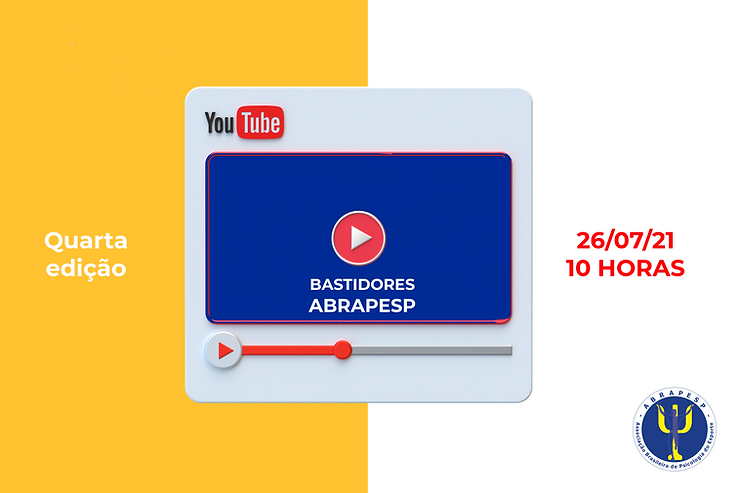
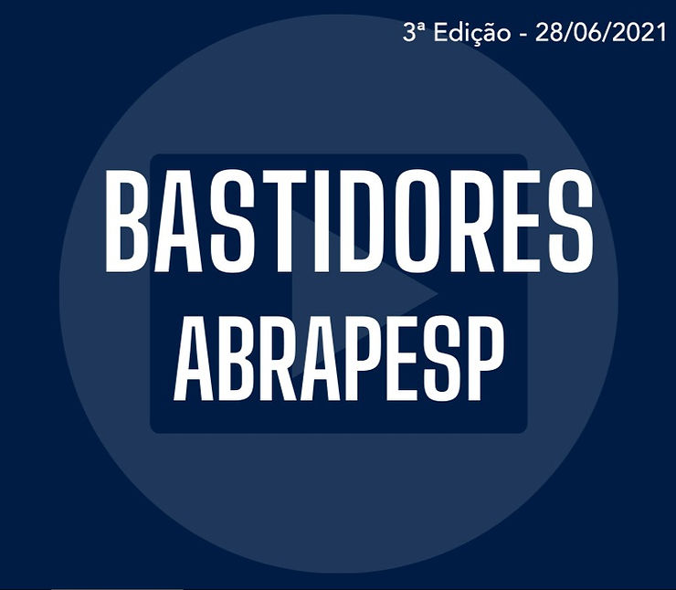

Nesta segunda, 26 de julho, vai ao ar a quarta edição dos Bastidores da ABRAPESP com a equipe de comunicação Roseana Pacheco Ricardo Angelo, com a presidente Thabata Telles e Rodrigo Acioli.
Na terceira esteve presente a vice presidente da ABRAPESP, Erika Holfing Epiphanio, Matheus Vasconcelos e Rodrigo Pieri falando dos bastidores do Comitê de Atualização profissional

O programa pode ser acompanhado, ao vivo, sempre na última segunda-feira do mês, as 10 horas.
O primeiro episódio teve a presença da Thabata Teles, Erika Epiphanio e Livia Viana, presidente, vice e tesoureira da ABRAPESP, respectivamente.
No segundo, a presidente Thabata Teles, esteve acompanhada, da secretária Luciana Angelo e do Rodrigo Damasceno da Comissão de Relacionamento Externo. O tema: as ações do comitê de Relacionamento Externo.
No dia 31 de maio, foi realizada a segunda edição dos Bastidores da ABRAPESP, no Canal Papo de PE, no YouTube.
A intermediação é do ex-presidente da entidade (2016/17) Rodrigo Acioli Moura. Após as Lives, os episódios ficam no canal Papo de PE